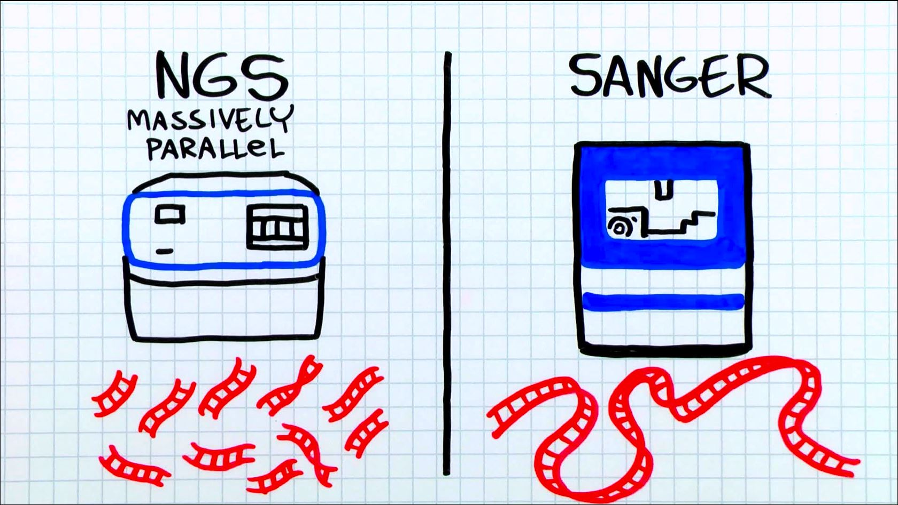
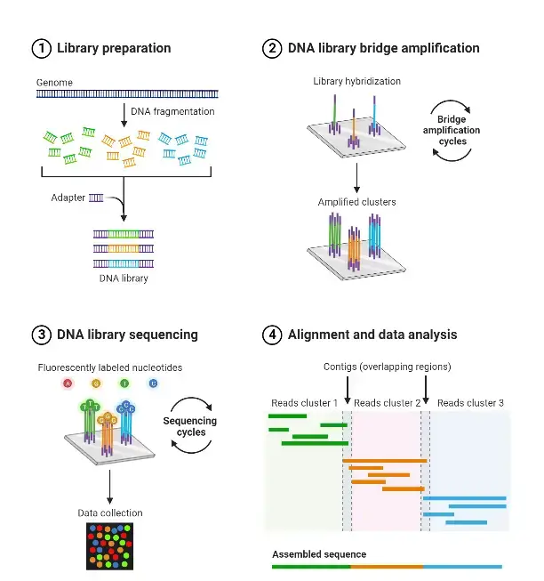
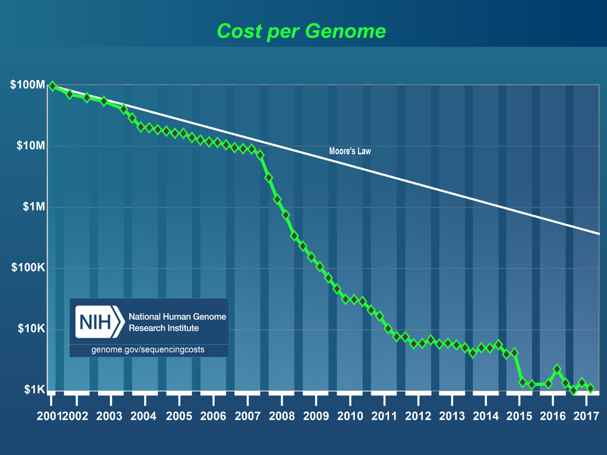
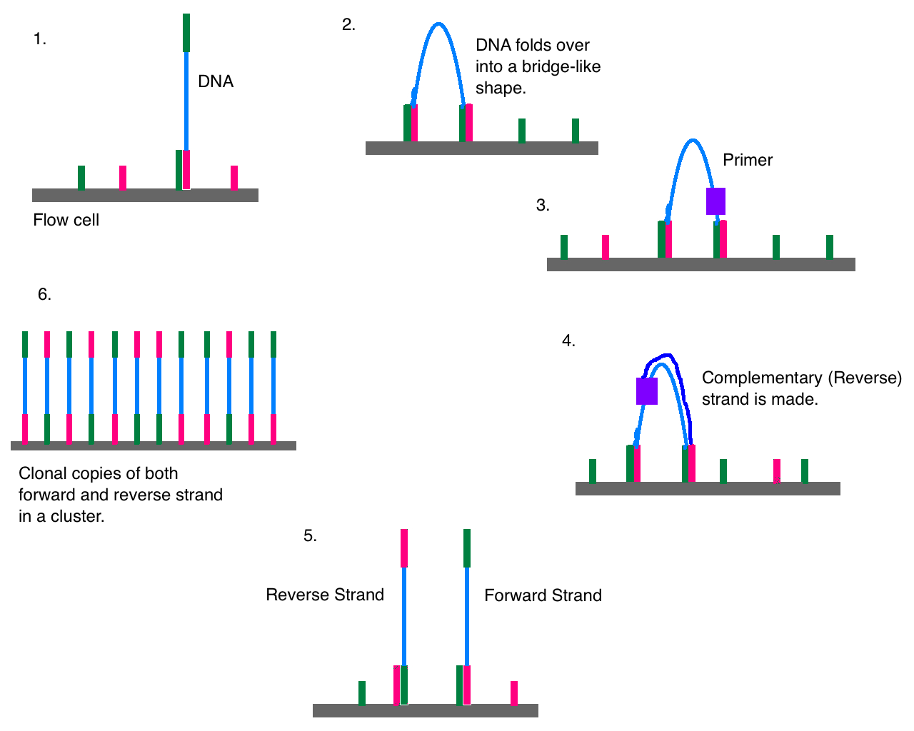
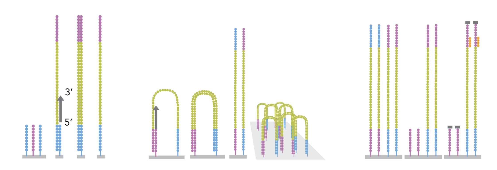
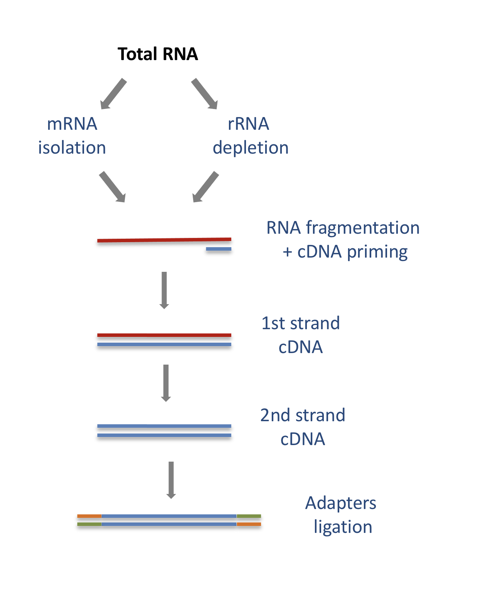
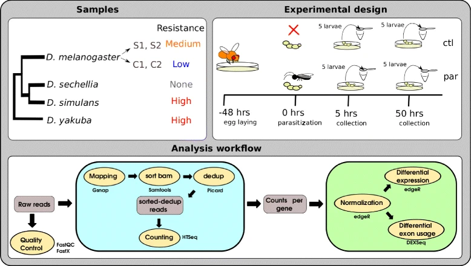
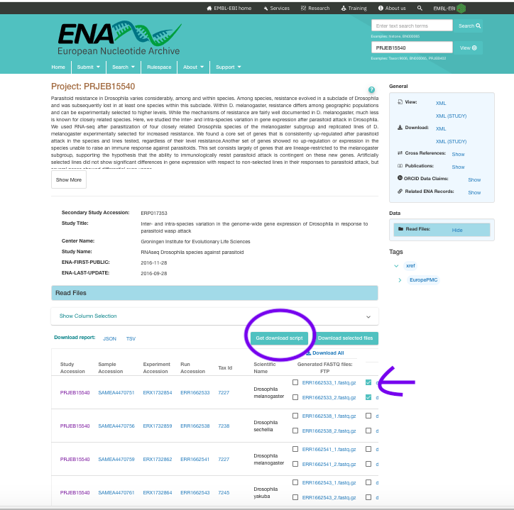
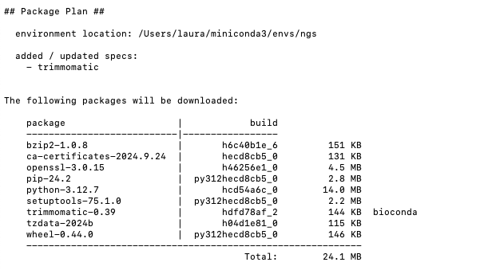

Secuenciación Masiva#
Biología como una ciencia data-intensiva#
Gracias a los avances en teconología high-throughput las secuencias y genomas de miles de organismos están disponible. Desde virus de unos miles de pares de bases hasta plantas con billones de pb. Asimismo, los metagenomas de comunidades de bacterias y microorganismos están siendo secuenciados a gran escala. Pero las secuencias no son los únicos datos disponibles, existen otros tipos de datos que están expandiendo la dimensión de información en biología. A medida que avanza la colección de datos, es imprescindible desarrollar la habilidad de interpretarlos y combinarlos para proponer nuevas hipótesis. El reto actual no es tanto adquirir los datos sino analizarlos e interpretarlos para obtener conocimiento sobre los sistemas biológicos.
En la sesión de hoy tendremos una introducción de la secuenciación high-throughput que inició este “big-bang” de datos.
Tipos de secuenciación#
Sanger: terminación de reacción de la DNA polimerasa con marcaje (radiactivo o fluorescente) https://www.youtube.com/watch?v=KTstRrDTmWI
High-throughput (Next Generation Sequencing): https://www.youtube.com/watch?v=jFCD8Q6qSTM&list=PLK1xpTaA9PuZqvDpaEYrA5d8kbmxqjXoJ&index=8
Illumina: fragmetación y marcaje luminiscente
Nanopore: Cambios en corriente eléctrica de nuleótidos a medida que pasan por un nanopore de prtoeína protein nanopore
Qué información se puede obtener de la secuenciación masiva?#
Los avances en tecnología han ayudado a obtener una secuenciacion mas profunda del genoma. Estos experimentos normalmente producen millones de lecturas, las cuales tienen que ser procesadas, filtradas y alineadas antes de cuantificar las señales genómicas de interés. Esta secuenciación se utiliza, por ejemplo, para ensamblar genomas o partes de ellos y examinar la variabilidad, para cuantificar trasncritos RNA-seq reads that overlap with exons. Post-alignment operations are usually, but not always, similar to operations on genomic intervals.
Secuenciación Masiva High-Throughput#
Una introducción y material de lectura https://data-science-sequencing.github.io/Win2018/lectures/lecture1/

Illumina#
Es la tecnología más usada en los últimos años. Utiliza nucleótidos marcados con fluorescecia para cuantificar la adición de nucleótidos de la polimerasa en cada paso, a medida que sintetiza un nuevo DNA sobre una superficie inmovilizada.
Amplificación por clusters y secuenciación#
El DNA fragmentado que produce la librería se hibridiza con una celda de flujo (to a flow cell) cubierta con oligonucleótidos inmovilizados que sirven para soportar los fragmentos de DNA de manera estable durante la secuenciación. Las plantillas se copian de los primers hibridizadospor estensión 3’ usando la DNA polimerasa. La plantilla original se desnaturaliza, dejando copias immovilizadas sobre la superficie de la celda de flujo.
Estas copias immovilizadas de DNA se amplifican por medio de un puente. Las plantillas forman un bucle hacia para hibridizar con los oligonucleótidos adyacentes. La DNA polimerasa copia la plantillade los oligonulceótidos hybridizados, formando puentes dsDNA, los cuales posteriormente se desnaturalizan para formar ssDNA. El proceso se repite en cada plantilla con ciclos de desnaturalización y amplificación para crear millones de densos clusters individuales, conteniendo ~2,000 molecules.
RNAseq#
Un ejemplo de datos producidos por vía de secuenciación masiva es la secuenciación de RNA, RNAseq https://uclouvain-cbio.github.io/WSBIM2122/sec-hts.html
El comienzo de un experimento de RNAseq es la generación de cDNA para la preparación de la libraría. El RNA se aísla del tejido y se purifica removiendo el RNA ribosomal, lo cual constituye la mayoría. Esto se puede hacer extrayendo el RNA con poly(A). El RNA purificado se fragmenta, se realiza transcripción reversa, se adicionan los adaptores y se ligan en la dos extremidades para permitir la amplificación y secuenciación.
Estudio de Caso#
Vamos a utilizar el caso de las mosquitas Drosophilas y su resistencia a las avispas parasitoides para descargar algunos datos y entender el proceso y qué esperar de un estudio de expresión por RNAseq
Donde se almacenan los datos crudos y cómo se ven?#
Esta secuenciación genera una enorme cantidad de información, la cual puede analizarse de múltiples formas. Por esta razón se depositan los datos crudos en repositorios públicos como NCBI o ENA. Por ejemplo, los archivos correspondientes al artículo https://bmcgenomics.biomedcentral.com/articles/10.1186/s12864-017-3697-3 se encuentran en https://www.ebi.ac.uk/ena/browser/view/PRJEB15540.
Vamos a descargar los dos primeros archivos ERR1662533_1.fastq.gz y ERR1662533_2.fastq.gz. Estos corresponden a las lecturas reads de una muestra. Estas lecturas se pueden obtener desde un extremo, single end (SE) o desde los dos extremo, paired end (PE). Cuando las lecturas son PE se obtiene un fragmento superpuesto de las dos secuencias y por lo tanto se obtiene una estimación más precisa.
En la página del proyecto del ENA seleccionamos los archivos a descargar y le damos “Get download script”. Esto descargará un script en bash (.sh) para descargar los dos archivos, el cual se puede correr usando el comando en bash de linux:
bash ena-file-download-selected-files-20241010-1658.sh
Fastq#
Una extensión del formato FASTA es el formato FASTQ. Este formato está diseñado para alojar infromación sobre la calidad de las secuencias. En este formato los puntajes de calidad (quality scores) están representados por caracteres ASCII. El formata utiliza 4 lineas para cada secuencia, y estas 4 lineas representan una lectura

La primera línea empieza con el caracter ‘@’ y está seguida por el identificador y una descripción opcional. Puede contener información sobre la cámara de flujo, el número de carriles, y el par (“1” o “2”).
Entre al directorio donde descargó los archivos .fastq y explore las secuencias crudas (sin descomprimirlas) utilizando el comando:
zless dm_1_ATCACG_L001_R1_001.fastq.gz
zless dm_1_ATCACG_L001_R2_001.fastq.gz
La línea 2 es la secuencia. La línea 3 contiene el caracter ‘+’ y marca el final de la secuencia. La línea 4 contiene los valores de calidad para cada secuencia, y por lo tanto and must contain the same number of symbols as letters in the sequence. Each letter corresponds to a quality score. Although there might be different definitions of the quality scores, a de facto standard in the field is to use “Phred quality scores”. These scores represent the likelihood of the base being called wrong. Formally,
\(Qphred=−10log_{10}e\)
where e is the probability that the base is called wrong. Since the score is in minus log scale, the higher the score, the more unlikely that the base is called wrong.
Cuantas secuencias tiene este archivo? Utilice el comando para obtener el número de líneas
gzcat dm_1_ATCACG_L001_R1_001.fastq.gz | wc -l
Cuantas tiene el otro archivo PE?
Control de Calidad y Filtros#
Para realizar el control de calidad vamos a instalar algunos programas usando conda. Como se hizo anteriormente, primero se crea el ambiente y se nombra. Luego se activa el ambiente y, una vez activado, se instala el programa.
conda create -y --name ngs # solo se requiere hacer una vez
conda activate ngs # siempre que se va a utilizar el programa se debe activar el ambiente
conda install -c bioconda fastqc
Ahora vamos a utilizar el programa FASTQC https://www.bioinformatics.babraham.ac.uk/projects/fastqc/ para realizar un reporte de de calidad de los datos crudos.
fastqc dm_1_ATCACG_L001_R1_001.fastq.gz
Esto genera un archivo dm_1_ATCACG_L001_R1_001_fastqc.html
Trimming#
Muchos de los archivos crudos necesitan ser filtrados ya que pueden contener secuencias de mala calidad y a veces también contienen aún los adaptadores, los cuales hay que remover. Vamos a utilizar trimmomatic, el cual instalaremos en el mismo ambiente que habíamos creado antes ngs
conda install -c bioconda trimmomatic
Vamos a crear un nuevo directorio donde se almacenarán los archivos filtrados.
cd ../
mkdir trimmed
cd trimmed
Una vez instalado trimmomatic podemos observar donde están los archivos, ya que allí se encuentra la lista de adaptadores 
El siguiente es un ejemplo de cómo correr trimmomatic. Dependiendo del reporte de calidad se pueden cambiar algunos parámetro
trimmomatic PE -phred33 -trimlog trimLogFile -summary statsSummaryFile \
/Users/laura/docencia/eafit/comp_bio/2024-2/highthroughput/arch_fastq/dm_1_ATCACG_L001_R1_001.fastq.gz \
/Users/laura/docencia/eafit/comp_bio/2024-2/highthroughput/arch_fastq/dm_1_ATCACG_L001_R2_001.fastq.gz \
dm1_output_forward_paired.fastq.gz \
dm1_output_forward_unpaired.fastq.gz \
dm1_output_reverse_paired.fastq.gz \
dm1_output_reverse_unpaired.fastq.gz \
ILLUMINACLIP:/Users/laura/miniconda3/envs/ngs/share/trimmomatic-0.39-2/adapters/TruSeq2-PE-2.fa:2:30:10 \
SLIDINGWINDOW:4:20 MINLEN:36
Utilice el siguiente link para averiguar los parámetros de este comando: https://datacarpentry.org/wrangling-genomics/03-trimming.html